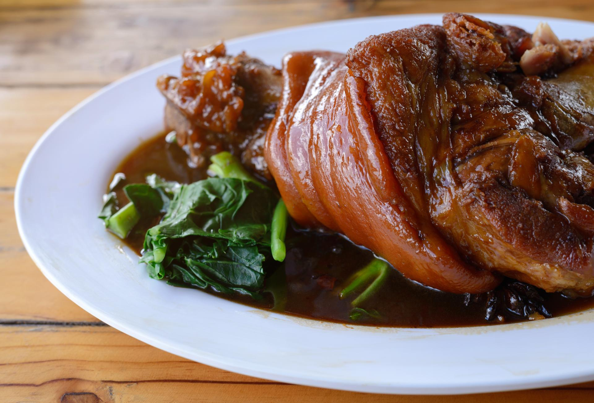
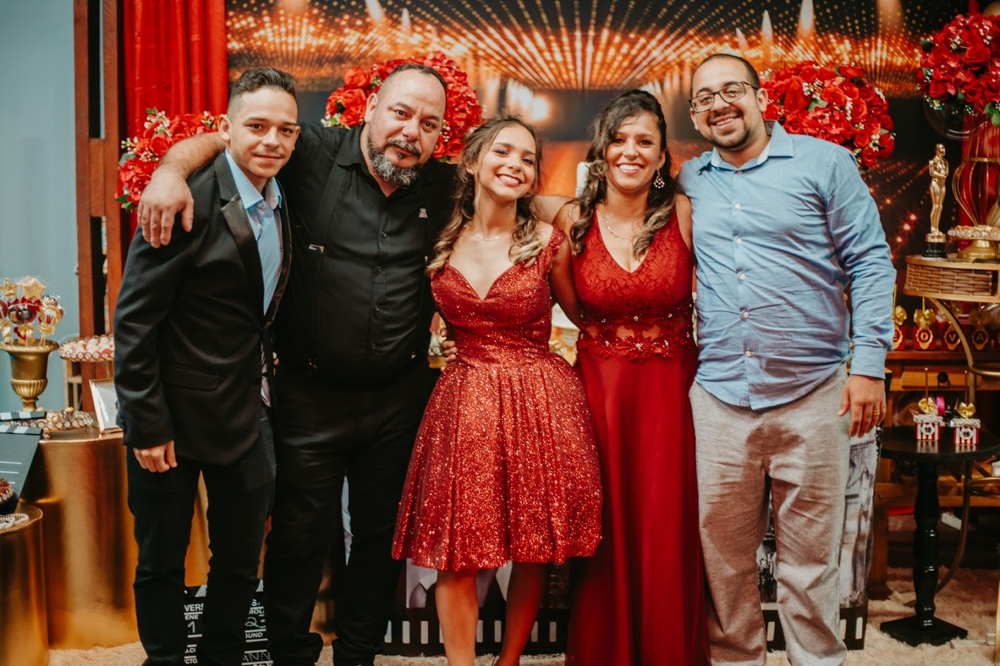
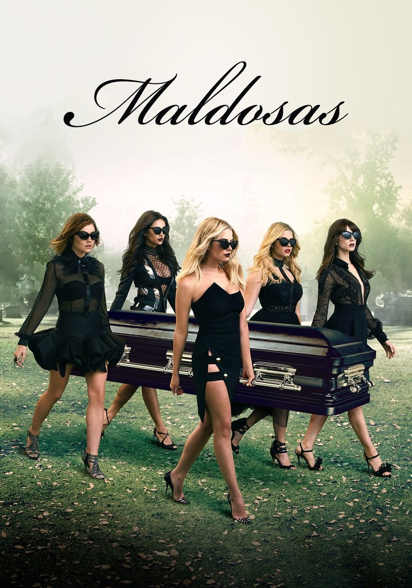

Minha comida favorita
Minha comida favorita é joelho de porco. Meu pai ama cozinhar, e as comidas dele são ótimas, mas essa eu acho sensacional de bom!
Meu hobby/passatempo favorito
Meu hobby com certeza é estar com minha família, com quem realmente eu amo e me sinto bem.
Um lugar que quero conhecer
Meu sonho é conhecer Madrid, na Espanha. Pra começar que eu torço pro Real Madrid né, e também lá é absurdo de lindo.
Série favorita
Pretty Little Liars
"Duas podem guardar um segredo, se uma delas estiver morta"
Cantor favorito
Armandinho
Gosto muito das músicas do Armandinho porque meu pai sempre ouvia comigo quando eu era criança. Tenho uma memória afetiva muito forte, já que até mesmo quando eu estava na barriga da minha mãe ele cantava "Ana Lua" para mim.